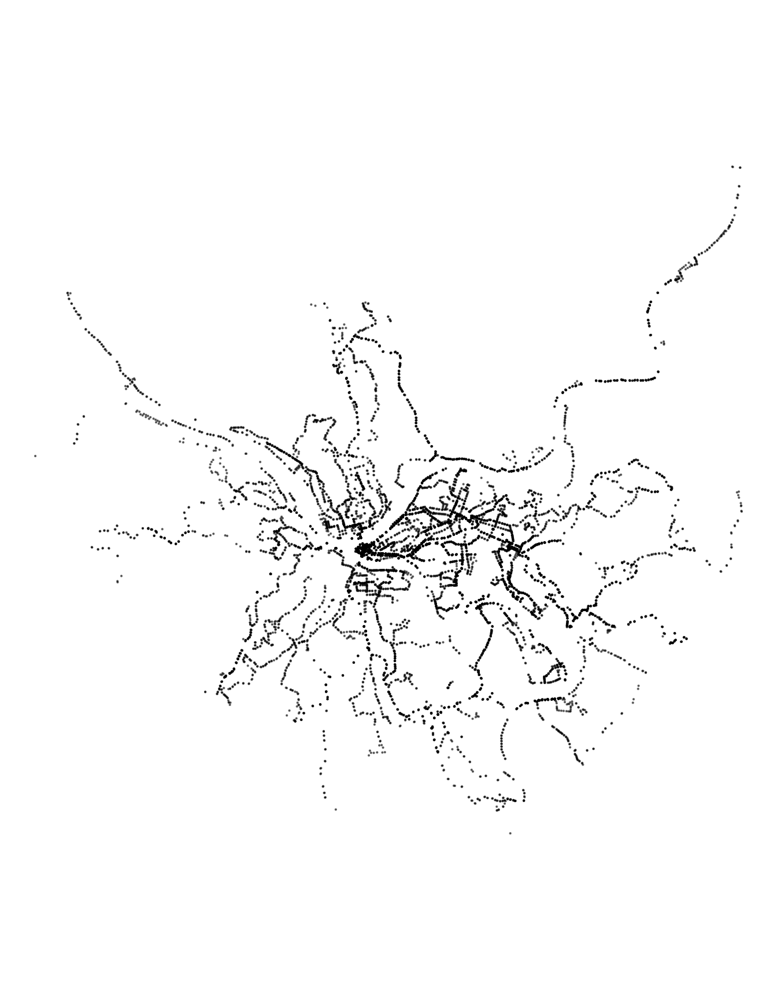

library(tidyverse)
library(sf)
library(janitor)
library(ggrepel)
library(hrbrthemes)
options(scipen = 999, digits = 2,
fig.width = 9,
fig.height = 9)
theme_set(theme_bw())As part my work on transit lines in Allegheny County, I am interested in which transit lines are most efficient, in terms of residents and jobs served. This is possible with the Port Authority transit line datasets hosted on the WPRDC and data from the Census.
Load libraries and set up the environment:
This loads the summarized LODES census tract data (munging script here)
df_tract_centroid_summary <- st_read("post_data/shapefiles/tract_centroid_summary/tract_centroid_summary.shp")To recap, the distribution of jobs and residents across census tracts is vaguely normal. The main outlier in the “jobs” measure is the census tract for the Golden Triangle (Downtown).
df_tract_centroid_summary %>%
select(GEOID, residents, jobs) %>%
st_drop_geometry() %>%
pivot_longer(cols = c(residents, jobs), names_to = "measure", values_to = "value") %>%
ggplot(aes(value, fill = measure)) +
geom_density() +
facet_wrap(~str_to_title(measure), ncol = 1, scales = "free") +
scale_x_log10() +
guides(fill = "none") +
labs(x = "Log 10 scale",
y = "Density")df_tract_centroid_summary %>%
ggplot(aes(residents, jobs)) +
geom_point() +
geom_label_repel(data = df_tract_centroid_summary %>% filter(jobs == max(jobs)),
label = "Downtown") +
scale_y_comma() +
scale_x_comma() +
labs(x = "Residents",
y = "Jobs")This code grabs the shapefile with the transit route stats and stop geometry. This code:
- calculates how many residents and jobs are in each census tract
- calculates which transit lines stops serve which census tracts
- summarizes how many residents and jobs a transit line servers
df_route_stats <- st_read("post_data/shapefiles/route_stats/route_stats.shp") %>%
rename(route_id = route_d,
service_type = srvc_ty,
residents = resdnts,
stop_count = stp_cnt,
route_name = rout_nm,
route_length_miles = rt_lng_,
stops_per_mile = stps_p_)df_route_statsSimple feature collection with 102 features and 8 fields
Geometry type: MULTIPOINT
Dimension: XY
Bounding box: xmin: -80 ymin: 40 xmax: -80 ymax: 41
Geodetic CRS: WGS 84
First 10 features:
route_id service_type jobs residents stop_count route_name
1 1 Local 21282 10119 224 Freeport Road
2 11 Local 998 4102 62 Fineview
3 12 Local 4640 2406 112 McKnight
4 13 Local 26667 15659 140 Bellevue
5 14 Local 31869 10017 140 Ohio Valley
6 15 Local 21376 3934 98 Charles
7 16 Key Corridor 22588 7712 124 Brighton
8 17 Local 30226 10285 108 Shadeland
9 18 Local 8380 4746 47 Manchester
10 19L Express 294211 18845 94 Emsworth Limited
route_length_miles stops_per_mile geometry
1 44.4 5.0 MULTIPOINT ((-80 40), (-80 ...
2 5.6 11.1 MULTIPOINT ((-80 40), (-80 ...
3 30.6 3.7 MULTIPOINT ((-80 41), (-80 ...
4 15.5 9.0 MULTIPOINT ((-80 40), (-80 ...
5 33.4 4.2 MULTIPOINT ((-80 41), (-80 ...
6 8.9 11.0 MULTIPOINT ((-80 40), (-80 ...
7 8.3 15.0 MULTIPOINT ((-80 41), (-80 ...
8 13.0 8.3 MULTIPOINT ((-80 40), (-80 ...
9 5.0 9.5 MULTIPOINT ((-80 40), (-80 ...
10 15.6 6.0 MULTIPOINT ((-80 41), (-80 ...This is a basic plot of all the transit stops in the county:
df_route_stats %>%
ggplot() +
geom_sf(size = .1, alpha = .5) +
theme_void()
The immediate question that comes to mind is “how many residents and jobs does a transit line serve?”. Keep in mind that more than one transit line can serve a given resident or job. This shows that the “Key Corridor” lines serve the most jobs.
df_route_stats %>%
ggplot(aes(jobs, residents, fill = service_type)) +
geom_label(aes(label = route_id), alpha = .5) +
scale_x_comma() +
scale_y_comma() +
scale_fill_discrete("Service type") +
labs(x = "Jobs served",
y = "Residents served")This graph compares how many residents/jobs a transit line serves to how long the line is. The 28X and P10 are the least efficient in both cases. However, the 28X serves the Pittsburgh International Airport, and that utility is not captured in this analysis.
df_route_stats %>%
filter(!is.na(route_id)) %>%
select(route_id, service_type, route_length_miles, residents, jobs) %>%
pivot_longer(cols = c(residents, jobs), names_to = "variable", values_to = "value") %>%
ggplot(aes(route_length_miles, value, fill = service_type)) +
geom_label(aes(label = route_id), alpha = .5) +
facet_wrap(~str_to_title(str_c(variable, "served", sep = " ")),
scales = "free_y",
ncol = 1,
strip.position = "left") +
scale_y_comma() +
scale_fill_discrete("Service Type") +
labs(x = "Route length (miles)",
y = NULL) +
theme(strip.text = element_text(hjust = .5),
strip.background = element_rect(color = "grey"),
strip.placement = "outside")This performs a similar comparison, but uses the number of stops per line instead of line distance. The 71/61 lines are very efficient in terms of jobs/stops, and the 59 appears to be the most inefficient.
df_route_stats %>%
filter(!is.na(route_id)) %>%
select(route_id, service_type, stop_count, residents, jobs) %>%
pivot_longer(cols = c(residents, jobs), names_to = "variable", values_to = "value") %>%
ggplot(aes(stop_count, value, fill = service_type)) +
geom_label(aes(label = route_id), alpha = .5) +
facet_wrap(~str_to_title(str_c(variable, "served", sep = " ")),
scales = "free_y",
ncol = 1,
strip.position = "left") +
scale_y_comma() +
scale_fill_discrete("Service type") +
labs(x = "Number of stops",
y = NULL) +
theme(strip.text = element_text(hjust = .5),
strip.background = element_rect(color = "grey"),
strip.placement = "outside")In terms of stops per mile, the Express lines are most efficient. The incline lines are least efficient, but that is an artifact of their unique geography.
df_route_stats %>%
filter(!is.na(route_id)) %>%
select(route_id, service_type, stops_per_mile, residents, jobs) %>%
pivot_longer(cols = c(residents, jobs), names_to = "variable", values_to = "value") %>%
ggplot(aes(stops_per_mile, value, fill = service_type)) +
geom_label(aes(label = route_id), alpha = .5) +
facet_wrap(~str_to_title(str_c(variable, "served", sep = " ")),
scales = "free_y",
ncol = 1,
strip.position = "left") +
scale_y_comma() +
scale_fill_discrete("Service type") +
labs(x = "Stops per mile",
y = NULL) +
theme(strip.text = element_text(hjust = .5),
strip.background = element_rect(color = "grey"),
strip.placement = "outside")This graph attempts to summarize everything by adding residents + jobs and comparing that to stops per mile. The “Express” and “Key Corridor” lines do the best here.
plot <- df_route_stats %>%
filter(!is.na(route_id)) %>%
select(route_id, service_type, stops_per_mile, residents, jobs) %>%
mutate(residents_plus_jobs = residents + jobs) %>%
ggplot(aes(stops_per_mile, residents_plus_jobs, fill = service_type, label = route_id)) +
geom_label(alpha = .5) +
labs(x = "Stops per mile",
y = "Residents plus jobs served",
caption = "'Served' means the line came within 200 meters of the center of a census tract") +
scale_x_continuous(expand = c(.1, .1)) +
scale_y_comma(expand = c(.1, .1)) +
scale_fill_discrete("Service type") +
facet_wrap(vars(service_type), ncol = 1) +
theme(legend.position = "bottom")
plot